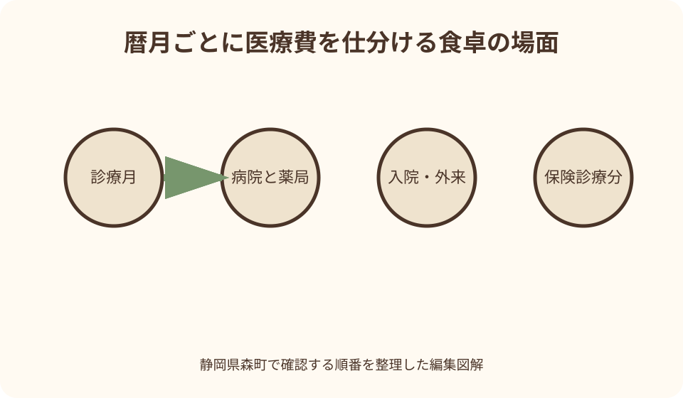
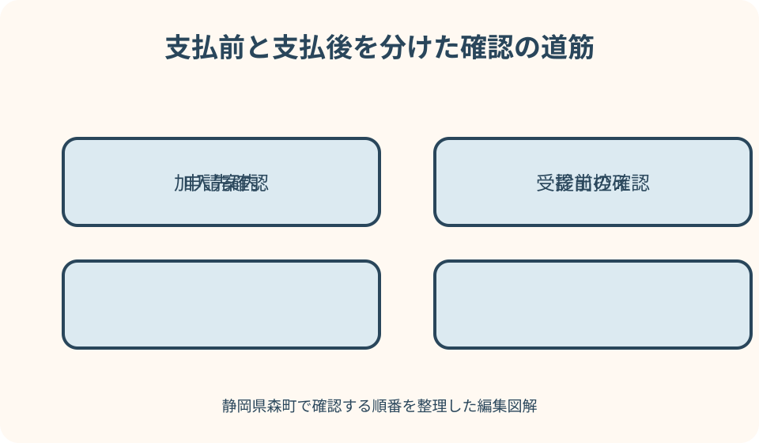

健康・医療・保険｜最終確認 2026-08-10
静岡県森町の国民健康保険・高額療養費｜申請案内が届くまでと確認手順
高額療養費は、領収書の合計だけを見て自分で支給額を決める制度ではありません。診療月、年齢、所得区分、世帯、受診先、保険診療かどうかを分け、森町から届く申請案内と加入中の資格情報を照合することが出発点です。
結論：支払前と支払後では、確認する順番が違う
静岡県森町の国民健康保険で医療費が高くなったとき、すでに支払った人は、診療を受けた月と領収書を分け、町から高額療養費支給申請書が届くかを確認します。森町公式は、該当者へ申請書を郵送し、その発送は診療後早くて約2～3か月後と案内しています。届く前に支給額を断定せず、転居や郵便事情がある場合は国保年金係へ連絡します。
これから入院や高額な外来診療を受ける人は、受診前に加入中の保険者、医療機関でのマイナ保険証利用可否、限度額情報の提供可否を確認します。森町公式では、マイナ保険証を利用すると、原則として高額療養費の限度額を超える窓口支払いが不要になり、限度額適用認定証の事前申請も不要と案内しています。
ただし、高額療養費の上限額は年齢と所得により異なり、2026年8月には国の制度変更もあります。この記事の確認日は2026年8月10日です。森町公式ページに掲示された表だけで将来の金額を確定せず、実際の診療月に適用される区分を町の国保年金係へ確かめてください。
この記事で扱うのは森町が保険者となる国民健康保険です。勤務先の健康保険組合、全国健康保険協会、共済組合、後期高齢者医療制度などに加入している場合、申請先と様式が変わります。資格情報のお知らせ、資格確認書、マイナポータルなどで保険者名を確認するところから始めます。
最初に保険者・診療月・年齢を一枚へ書く
最初の欄には、患者本人の氏名、生年月日、森町国保の資格があった期間、診療を受けた年月を書きます。現在は森町国保でも、診療時点では勤務先の保険だった場合があります。高額療養費は診療を受けた時点の加入先へ確認するため、現在の住所だけで申請先を決めません。
次に、医療機関名、薬局名、入院か外来か、医科か歯科かを領収書ごとに分けます。領収書の支払日ではなく、何月の診療分かを見るのが要点です。月をまたぐ入院では、同じ入院でも7月分と8月分を別に整理します。
年齢は、70歳未満、70歳以上75歳未満、後期高齢者医療の対象かを確認します。森町公式の計算表も年齢区分ごとに分かれています。同居家族の領収書をまとめるときも、全員を一つの山にせず、加入制度と年齢を先に付記します。
所得区分は、手取り額や家族の感覚で決めません。世帯の所得申告状況が区分判定に影響する場合もあるため、表示された資格情報や町の説明を確認します。未申告の人がいる、転入したばかり、世帯構成が変わったという場合は、その事情を国保年金係へ伝えます。
高額療養費がカバーするものを正しく理解する
厚生労働省は、高額療養費を、医療機関や薬局の窓口で支払う医療費が月ごとの上限額を超えた場合に、その超えた額を支給する仕組みと説明しています。上限は一律ではなく、年齢や所得に応じて決まります。支払った医療費の全額が戻る制度ではありません。
森町公式では、計算期間を月の1日から末日までの暦月としています。例えば月末から翌月まで入院した場合、入院全体の領収額ではなく、各月の保険診療分を分けて判定します。医療機関の請求が一枚でも、診療月が分かる明細を保管します。
計算対象は原則として保険診療の自己負担です。森町公式は、入院時の食事代や差額ベッド代などを対象外と明記しています。診断書代、日用品、自由診療なども、保険診療分と同じ欄に混ぜないよう明細で確かめます。
高額療養費は医療費控除とは別の仕組みです。高額療養費で補われる金額がある場合、確定申告の医療費控除では扱いが変わり得ます。税の申告をする人は、町からの支給決定通知と領収書を一緒に保管し、税務署や税理士など適切な確認先へ相談します。
領収書は医療機関・入院外来・医科歯科で分ける
森町公式は、70歳未満の計算について、各医療機関ごとに計算し、同じ医療機関でも入院と外来、医科と歯科を別に扱うと説明しています。病院名が同じだから全部を合計できると考えず、領収書へ「入院・医科」などの区分を書いた付箋を付けます。
院外処方の薬局で支払った薬剤費は、処方した医療機関の診療分と合算する扱いが示されています。薬局の領収書だけを別月の袋へ入れると組合せを見失います。処方箋を出した医療機関、受診日、調剤日がたどれる形で保管します。
同じ世帯の70歳未満の人について、森町公式は、同じ月内に一つの区分で21,000円以上となる自己負担が複数ある場合の世帯合算を説明しています。ただし、70歳以上を含む世帯では計算順が異なります。家族だけで結果を確定せず、対象になりそうな領収書をすべて提示して確認します。
領収書を紛失した場合、カード明細や家計簿だけでは診療内容を確認できません。再発行や支払証明の可否は医療機関ごとに異なるため、医療機関へ相談します。原本を別の申請にも使う予定があるときは、提出先へ原本返却や写しの扱いを事前に尋ねます。

2026年8月の変更をまたぐときは診療月で確認する
厚生労働省は、2026年8月から月額負担上限の見直しと年間上限の新設を案内しています。年間上限の期間は8月から翌年7月までです。7月診療と8月診療では参照すべき表が違うため、家族の古い申請書に書かれた金額をそのまま使わないでください。
また、2027年8月には所得区分を細分化する予定も示されています。長期治療では、初回申請時と一年後で区分や上限が変わる可能性があります。申請書が届くたびに、対象診療月、所得区分、多数回該当の扱いを読み直します。
森町公式ページの表示内容と国の最新案内に差があるように見える場合は、どちらかを自己判断で採用しません。画面の更新日、対象診療月、該当する年齢区分をメモし、森町住民生活課国保年金係へ具体的に照会します。
電話では「高額療養費はいくらですか」だけでなく、「2026年8月診療分、年齢は○歳、森町国保、申請書は未着です。どの区分表を確認すればよいですか」と伝えます。個人情報をメールや公開フォームへ不用意に書かず、町が案内する安全な方法を使います。
支払前はマイナ保険証と限度額情報を確認する
高額な診療が予定されるときは、いったん大きな金額を支払って後日申請する方法だけではありません。森町公式は、マイナ保険証を利用すれば、原則として限度額を超える窓口支払いが免除され、限度額適用認定証の事前申請が不要になると案内しています。
利用時は、医療機関や薬局の受付でマイナ保険証に対応しているか、限度額情報の提供に同意する操作が必要かを確認します。カードを持っているだけで必ず処理が完了するとは考えず、受付画面の案内や職員の説明に従います。
森町の「マイナンバーカードの健康保険証利用について」では、マイナ保険証を持たない人には資格確認書が交付される案内があります。マイナンバーカードの取得や保険証利用は義務ではありません。カードを使えない事情がある人は、資格確認書と限度額の扱いを国保年金係へ相談します。
オンライン資格確認に未対応の医療機関、システム障害、資格変更直後などでは、その場で情報を確認できない場合があります。入院日が決まった段階で医療機関の相談窓口と町へ連絡し、必要な書類、提出時期、窓口支払額の扱いを確認しておくと安心です。
申請案内が届いたら封筒・対象月・振込先を照合する
森町から申請書が届いたら、最初に対象者と対象診療月を確認します。複数月の治療では一度に全部を扱うとは限りません。申請書左上の注意事項を読み、チェック欄、署名欄、同封物、提出期限、返送先を封筒ごと確認します。
申請書に記入する口座は、名義や番号を通帳などの正式表示と照合します。世帯主と患者、振込口座名義人が異なる場合の可否は、推測せず申請書の説明か国保年金係へ確認します。書き損じたときの訂正方法も、独自に修正せず問い合わせます。
支給までの日数は、申請時期、審査、医療機関から届く情報などで変わり得ます。町公式に「早くて約2～3か月後」とあるのは申請書の発送時期であり、振込完了までの保証日数ではありません。家計の支払予定は支給見込みだけに頼らず組みます。
提出後は、申請書の写し、発送日または窓口提出日、対象月、問い合わせ先を控えます。個人番号や口座情報を含むため、スマートフォンで撮影した画像を家族の共用チャットへ置かず、閲覧者を限定した保存場所を選びます。
通知が届かないときは、待つ理由を切り分ける
診療から3か月ほど過ぎても案内が届かない場合、ただちに対象外と決めつけないでください。医療機関からの請求時期、保険資格の変更、住所変更、世帯合算の判定など、確認に時間がかかる事情があります。対象月と受診先を用意して町へ照会します。
転居した人は、診療当時の保険者と現在の保険者を分けます。郵便物の送付先変更が反映されているかも確かめます。町外の家族宅へ一時滞在していても、申請先が自動的に滞在先自治体へ変わるわけではありません。
世帯主が変わった、結婚や離婚があった、勤務先保険へ移った場合は、その日付を一枚の時系列へします。医療費を支払った人と保険の被保険者、世帯主が同じとは限らないため、関係を口頭だけで説明せず、日付と資格情報を見せられるようにします。
急な支出で生活費が足りない場合は、高額療養費の通知を待つだけにしません。森町公式は、災害や特別な事情で収入が著しく減少し、一部負担金の支払いが難しい場合に、減免や徴収猶予を受けられる場合があるため事前相談するよう案内しています。対象可否は町が判断します。
多数回該当・世帯合算・特定疾病は別々に尋ねる
長期治療では「多数回該当」という仕組みがあります。厚生労働省は、直近12か月に高額療養費へ3か月以上該当した場合、4か月目以降の自己負担限度額が軽くなる仕組みと説明しています。転職や転居で保険者が変わるときの通算は、個別に確認が必要です。
同じ国保世帯の家族に医療費がある場合は、世帯合算の可能性を尋ねます。領収書が少額だからと捨てず、診療月ごとに全員分を並べます。ただし、別世帯、別の医療保険、保険診療外の費用は同じ扱いにならないため、町へ示して区分してもらいます。
血友病、血液凝固因子製剤に起因するHIV感染症、人工透析が必要な慢性腎不全について、森町公式には特定疾病の扱いと申請方法が別に示されています。通常の高額療養費申請と同じ封筒を待つのではなく、該当する可能性があれば国保年金係へ先に連絡します。
高額介護合算療養費も名前が似ていますが、医療保険と介護保険の一年間の自己負担を扱う別の仕組みです。介護サービスも使っている家族は、通常の高額療養費、多数回該当、高額介護合算の三つを同じものとして記録せず、それぞれ対象期間と窓口を確認します。
森町での暮らしでは、受診と役場の移動を一度に組まない
森町役場の国保年金係は森地区にあります。北部や山間部から来庁する家族は、通院日に役場手続も詰め込むと、治療後の体調や交通事情によって負担が大きくなります。まず電話で申請書の提出方法と持参物を確認し、本人の来庁が必要かを尋ねます。
家族が代理で相談する場合は、本人との関係、本人確認、委任の要否、説明を受けられる範囲を事前に確認します。医療費や所得区分は慎重に扱う個人情報です。「家族だから全部聞ける」と思い込まず、本人の意思を確認したうえで準備します。
公立森町病院以外の町外医療機関へ通う人も、保険者が森町国保なら町の案内を確認します。病院の所在地と保険者の所在地を混同しないことが大切です。医療機関には窓口負担と明細、町には国保給付と申請方法を尋ねるよう役割を分けます。
車で移動できない家族は、申請のためだけに送迎を決める前に、郵送提出の可否、相談だけなら電話で済むかを尋ねます。申請書に原本添付が必要な場合の発送方法や返却についても確認し、重要書類を普通のメモと同じ封筒へ入れないようにします。
良い点：医療費の上限を世帯の記録へ落とし込める
高額療養費の良い点は、保険診療の自己負担が大きくなった月に、年齢と所得に応じた上限を設けることです。支給対象を正しく確認できれば、高額な治療を受けた家庭の負担を抑える支えになります。
マイナ保険証で限度額情報を確認できる医療機関では、後日の払い戻しを待たず、窓口支払いを上限までにできる利点があります。手元資金への影響が大きい入院前ほど、対応可否を早めに確認する意味があります。
町から届く申請案内を対象月ごとに整理すると、家族が医療費の経過を引き継ぎやすくなります。本人が治療に集中している時期でも、領収書、申請、決定通知、振込の各段階を家族が混同しにくくなります。
計算単位を知ることは、単に支給額を予想するためではありません。月をまたぐ治療、複数医療機関、院外薬局を早めに整理し、町へ正確な質問を出せます。結果として、領収書の紛失や申請後の確認漏れを減らせます。
注文したい点：最新の上限と個別条件を一画面だけで確定できない
注文したい点は、森町公式の一つのページに国保加入、負担割合、年齢別上限、申請方法など多くの情報がまとまり、初めて読む人には自分の箇所を特定しにくいことです。ページ内検索で「高額療養費」を探し、年齢区分と診療月を手元に置いて読みます。
2026年8月の制度変更期は、町ページの表と国の最新案内で対象時期が異なる可能性があります。ウェブ上の数字だけで資金計画を確定せず、「何月診療分か」を明示して国保年金係へ照会できる案内がさらに見つけやすくなると助かります。
申請書が郵送される時期と、申請後に振り込まれる時期は別ですが、読み手は同じ期間だと受け取りやすい部分です。家計が厳しい人向けに、支払前の限度額利用、申請書発送、審査、支給という時間軸が一つの図で示されると理解しやすくなります。
マイナ保険証を利用しない人、オンライン確認ができない医療機関を受診する人、代理相談が必要な人の代替手順も、個別に確認が必要です。便利な方法を主に案内しつつ、使えない人の入口が同じページから分かる構成を望みます。

代案・結論：申請書待ちだけにせず、支払前の相談も使う
予定入院なら、医療機関の患者相談窓口や受付へ、マイナ保険証による限度額確認が可能かを尋ねます。使えない場合は、森町国保で必要となる代替手続きを町へ確認します。退院日に初めて相談すると、書類や確認に時間が足りないことがあります。
すでに支払った場合は、対象診療月の領収書を保管し、森町からの申請書を待ちます。約3か月を過ぎても届かない、転居した、保険が変わったなどの事情があれば、資格情報と診療月を準備して国保年金係へ問い合わせます。
医療費の支払い自体が難しいときは、高額療養費の払い戻しだけで解決しようとしません。医療機関の相談窓口、森町の一部負担金減免・徴収猶予の相談、社会福祉に関する相談など、状況に合う窓口を早めに確認します。利用可否は各窓口の審査によります。
結論は、「加入先を確かめる」「診療月ごとに分ける」「支払前なら限度額情報を確認する」「支払後は申請案内を保管する」の四段階です。支給額を自分で断定するより、町が判定できる資料を欠けなくそろえることが実務的です。
家族に残す記録：医療費台帳は四つの箱に分ける
一つ目は資格の箱です。資格情報のお知らせ、資格確認書、保険者名、記号番号、資格取得・喪失日を入れます。マイナンバーカード自体の写しを安易に共有せず、必要な情報と保管権限を限定します。
二つ目は診療の箱です。領収書と診療明細を月別、医療機関別、入院外来別に分け、院外薬局の領収書を処方元と結びます。治療内容の詳細を不動産書類など別目的の共有ファイルへ混ぜないようにします。
三つ目は申請の箱です。町から届いた封筒、申請書の控え、提出日、問い合わせ日時、担当部署、回答の要点を残します。電話の内容は、誰が聞いたかと次に確認する日も書き、未確認事項を事実のように記録しません。
四つ目は結果の箱です。支給決定通知、振込日、対象月、支給額をまとめます。医療費控除や家計の精算に使う家族は、領収書と対応する番号を付けます。保存期間が分からない書類は、町や税の窓口へ確認してから処分します。
大石の視点：治療中の家族へ不動産の結論を急がせない
大石の視点では、医療費が増えた直後に「実家を売ればよい」と結論を急ぐべきではありません。まず、高額療養費で戻る可能性のある金額、今後の通院費、介護や移動の負担、住宅の維持費を別々に記録し、確定額と見込額を分けます。
森町の実家から町外の病院へ通う場合、医療費だけでなく、送迎する家族の時間、燃料、駐車、冬や大雨時の道路条件も暮らしの負担になります。ただし、それは高額療養費の計算対象とは限りません。制度給付と生活費を同じ表の別欄へ置きます。
空き家になる可能性がある家では、医療書類の整理と並行して、施錠、郵便、草木、雨漏り、境界、道路、登記名義を家族で確認します。患者本人に一度で判断を求めず、緊急の管理と将来の選択を分けることが大切です。
私は、売却未定の段階ほど「実家カルテ」のような台帳が役立つと考えます。医療の個人情報は別に保護しつつ、家の名義、連絡先、固定費、管理担当を残します。治療が落ち着いてから、住み続ける、家族が管理する、貸す、売るなどを比較できます。
まとめ：今日確認する五項目
第一に、診療時点の保険者名を確認します。森町国保でなければ、資格情報に記載された保険者へ問い合わせます。第二に、領収書を診療月、患者、医療機関、入院外来、医科歯科、薬局で分けます。
第三に、これから高額な診療を受けるなら、医療機関でマイナ保険証と限度額情報を利用できるかを確認します。利用できない場合やカードを使わない場合は、資格確認書を含む代替手順を森町国保年金係へ尋ねます。
第四に、すでに支払った場合は森町から届く高額療養費支給申請書を待ち、約3か月を目安に未着なら照会します。郵便物が届いたら、対象月、注意事項、提出期限、振込先を確認し、提出控えを残します。
第五に、2026年8月以降の診療分は国の制度変更後の上限が関係します。ウェブ記事の金額を転記せず、年齢、所得区分、診療月を添えて町へ確認してください。この記事は制度の入口を整理するもので、個別の支給可否や支給額を保証するものではありません。
公式情報・確認先
掲載内容は次の一次情報を基礎に整理しました。営業、料金、催し、交通は変わるため、出発前または手続き前にリンク先で最新情報を確認してください。
- 国民健康保険（静岡県森町、2026-08-10確認）
- マイナンバーカードの健康保険証利用について（静岡県森町、2026-08-10確認）
- 高額療養費制度を利用される皆さまへ（厚生労働省、2026-08-10確認）